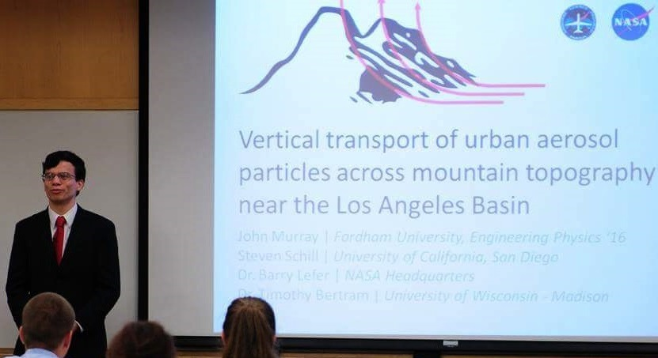

Systems Engineer
Harris Corporation - Space & Intelligence Systems
- Algorithm development and requirements management for GPS space segmentProject Lead
Engineers Without Borders USA - Fordham University Chapter
- Lead designer of an aquaculture system in Serere, Uganda (pond excavation, intake & drainage system, storage structures) under supervision from professional engineering mentors.- Manage project personnel & budget.
Resident Technology Consultant
Fordham IT - Student Technology Services | September 2013 - May 2016
- Provided timely and quality technical support to resident students of Fordham University.- Hosted educational workshops on a variety of relevant topics.
- Provided technical support at Fordham IT Customer Care Center, in person and over the phone.
Student Airborne Research Program
NASA - Airborne Science Program | June 2015 - August 2015
- Conducted studies of Southern California air quality from NASA's DC-8 airborne science platform.- Constructed original research project based on aerosol data. linked below.
- Selected to present work at American Geophysical Union Fall 2015 meeting.
- More information on the Student Airborne Research Program

Undergraduate Research Assistant
Fordham University - Dept. of Physics and Engineering Physics | October 2013 - June 2015
- Harnessed whispering-gallery mode techniques for laser detection of nano-scale bodies.- Observed the optical properties of chiral liquid crystalline nanocomposites and determine their applicability as detectors of: submicron displacements, volatile gases, external magnetic fields.
Resident Assistant
Fordham University - Office of Residential Life | August 2014 - May 2015
- Supervised students in residential dormitory, as a lead counseling resource for students, academically and personally, while enforcing the University’s policies and procedures.- Developed successful residential programs for students while utilizing a limited budget.
- Developed a community for all residences, while managing personal priorities balanced with the needs for the students, developing leadership, management, communication, and time management skills.
John Murray
Skills
Technical Support (Hardware/Software)OS X
Windows
Linux
SolidWorks
IBM Rational DOORS
Requirements Management
Configuration Management
Matlab
Python
HTML/CSS
Coursework
B.S. Engineering Physics
Fordham University
MathMultivariable Calculus I, II
Differential Equations
Linear Algebra
Engineering
Engineering Statics & Dynamics
Mechanics of Materials
Fluid Mechanics
Engineering Thermodynamics
Electrical Engineering
Engineering Experimentation
Modeling, Simulation, & Design
Machine Design
Physics
Modern Physics
Theoretical Mechanics
Electricity & Magnetism
Thermodynamics & Statistical Mechanics
Chemistry
General Chemistry I, II + Lab
Programming
Programming for Math & Science (Python)
Achievements